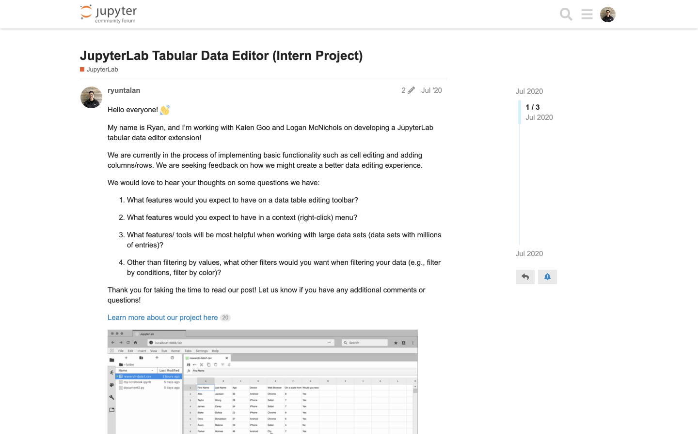

JupyterLab Tabular Data Editor
Ryan Untalan
Aug. 28, 2020 · 7 min
Overview
Project Description: The JupyterLab Tabular Data Editor is a
JupyterLab extension that enables you to edit your data files
side-by-side with Jupyter Notebooks. I collaborated with two
developers, Kalen Goo and Logan McNichols, on creating this extension during my internship at Project
Jupyter.
Role: UX/UI Designer, Front-end Developer, UX Researcher
Tools: Figma, GitHub, Heuristic Evaluations, Interviews, Journey Mapping, HTML/CSS, TypeScript
Time Duration: 10 weeks
What is JupyterLab?
JupyterLab is a web-based development environment where people can
code and analyze data. It is an open-source software, developed on
GitHub, through the consensus of the Jupyter community. It’s a tool
used to support a wide range of workflows in data science, scientific
computing, and machine learning.
Understanding the Problem
Editing data files within JupyterLab is inefficient and slow
Data is an integral part of many JupyterLab workflows, but a native
data editing tool is non-existent. Up until our extension, data files
(e.g. CSV, TSV, or EXCEL) were read-only in JupyterLab. That meant
every time you wanted to edit your data, you either had to directly
change code within the file or you wasted time alternating between a
spreadsheet editing software and JupyterLab.
This is just a 20 row by 8 column table. Imagine how bad it would be
with a larger set of data.
Here is Our Solution
The JupyterLab Tabular Data Editor makes it easy to edit data files
Our extension streamlines the editing process with a refined suite of
commands that help users prepare data for further work in machine
learning, scientific computing, or other data-driven tasks. You can create and edit CSV files from scratch, navigate through millions of cells smoothly, and manage your data side-by-side with Jupyter Notebooks.
Official Release
The official release of the extension was August
28th, 2020. Since then, it has received over 7,000 downloads.
How was it made?
The Design Process
Project Assignment
My team and I were assigned the broad project of "create an extension for editing data files within JupyterLab." The people who typically use JupyterLab include data scientists, researchers, and students.
Understanding the Context
To better understand the problems space, the people who use JupyterLab, and their current tools and workflows, I conducted five interviews, studied four existing spreadsheet editors, and leveraged the Jupyter community forum.

Journey Mapping
I then synthesized the data into journey maps. This helped my team and I visualize the research insights and understand how a data editing tool within JupyterLab can alleviate the pain points faced by different people who use JupyterLab to accomplish various goals.
Pain Points into Opportunities
My team and I then translated these pain points into opportunities. Based on our findings, the core opportunities we aimed to accomplish include:
1. Make data files editable within JupyterLab
2. Provide data editing tools to clean and organize data
3. Implement basic formula calculations
4. Support real-time collaboration
2. Provide data editing tools to clean and organize data
3. Implement basic formula calculations
4. Support real-time collaboration
Due to technical feasibility and given our 10 week time constraint, our team honed in on the first two opportunities.
Opportunities into Key Features
From our opportunities, we created a prioritized list of features to be added. Each feature was determined and prioritized based on feasibility and its impact on helping someone edit, clean, and organize their data.
The list helped my team and I align on what needed to be accomplished and helped ensure we were all working on features that would directly benefit our audience.
Prototyping
While the developers focused on how to create an extension, I got to prototyping. For each feature, I created an interactive prototype using Figma and the Project Jupyter design system. For my team, the best way to communicate how a feature should look and feel was through showing them an interactive prototype. Here are some examples:


Review and Iterate
A significant part of the prototyping process was having design reviews, getting feedback, and iterating on them. The timeline below showcases some of the more formal product demo reviews during week four and week eight. In addition, a lot of prototype refinement came from informal design critiques with core Jupyter members and other designers within my cohort.

Communicating through GitHub
As a designer, I want to effectively communicate with my developers. GitHub was an amazing tool in presenting my designs to them. I created issues on our GitHub repository and uploaded interactive prototypes, mockups, and design details. Not only was this method effective in communicating design specs, but it also consolidated all of the information into one place where the developers can quickly access it.
Front-end Development
I worked on the data table, toolbar interface, and context menus. I also take great pride in making color styling changes so that it’s WCAG AAA approved!
Usability Testing with Binder Links
After 8 weeks of design and development, we began usability testing! I led and executed all the moderated usability tests for our team. Each test was conducted through zoom, and our participants were able to access our extension through a binder link. I then translated the findings into actionables for the developers. The tests helped us find bugs and unexpected interactions. We learned about the many mini interactions people perform when using a data table editor, and it helped us create a more informed and polished experience.
Final Designs
Quickly create and edit data files directly with JupyterLab
Navigate through large datasets with ease
Manage your data side-by-side with Jupyter Notebooks
Design Documentation
To wrap up the project, I created a user guide that documents the different interactive elements of the extension. These elements include context menus, toolbar functions, and keyboard shortcuts.
Reflection
It’s the small details that create a polished user experience. From microinteractions to keyboard shortcuts to error messages, there are many details that go into creating a quality user experience. This project highlights the many subtleties that need to be considered when creating an interactive product.
Test and get feedback often. Secondary research and internal team discussions are important but provide a limited perspective on the unique workflows people have when cleaning and editing data. Interviews, usability tests, and design critiques were essential for deepening our understanding of the many use cases of a data editor.
Community is vital for open-source software projects. Open-source software relies on open collaboration and encourages the sharing of knowledge. Without a supportive community, these projects wouldn’t move forward. Thank you to Project Jupyter for inviting me into their community, and I look forward to further contributing to the world of open-source software.
Thank you for reading!